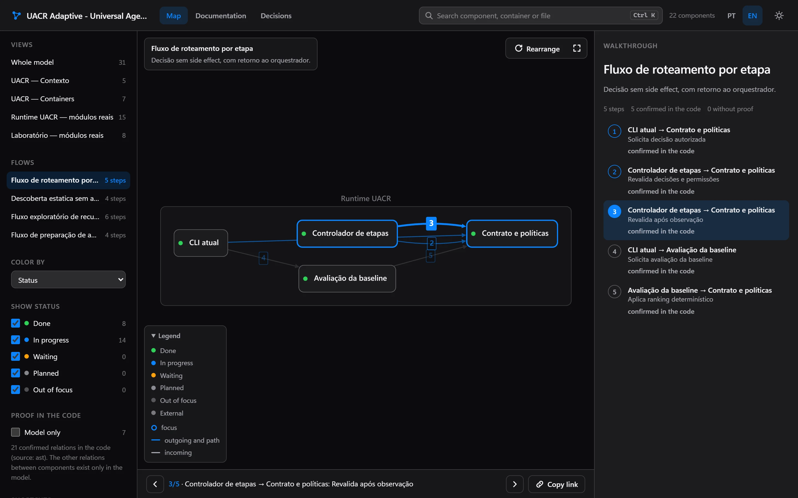
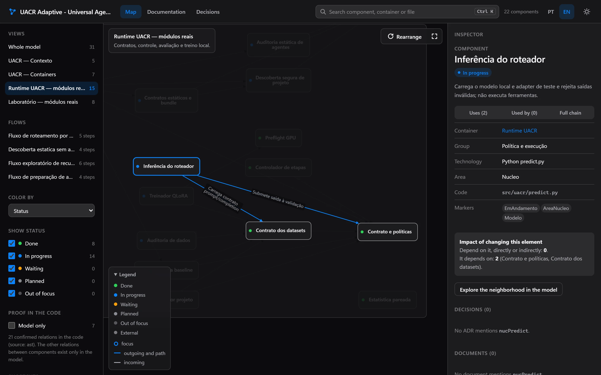
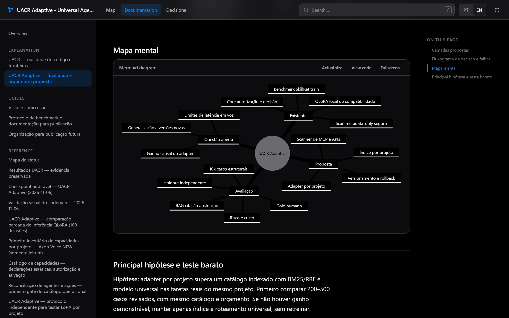
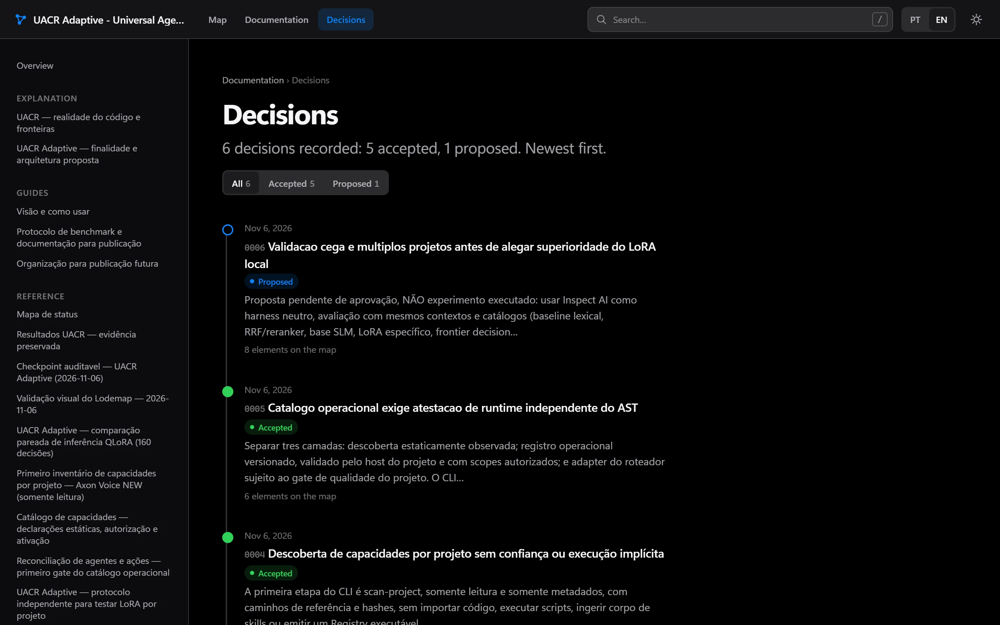

Lodemap
This pageThe project's map and documentation. Works on its own, with no server. CodeGraph (relations at 0 tokens) and Synapse (project lessons) are optional integrations.
Agents read the repository and build a C4 map with animated flows, a docs reader and a test that fails when a module is left out. From then on, every commit updates it all with scripts only, with no model call.

01The problem
Teams inherit systems nobody can explain end to end. Rewriting the docs takes weeks, and they go stale right after. Asking a model to "document everything" is expensive and does not guarantee the text matches the code.
Drawn by hand once, never checked again.
Newcomers have to work out on their own where a request goes.
Metrics and benchmarks quoted with no file and no commit.
The why behind each choice lives in conversations nobody finds later.
02What it builds
The architecture model lives in your repository, in Structurizr DSL (the C4 standard), and is reviewed in pull requests like any code. Everything else is generated from it and runs locally, with no server.
System, containers, components grouped by area, named relations, views and dynamic flows. Every component has a status: done, in progress, waiting, planned or out of focus.
# model/componentes-api.dsl (example) group "Routing" { router = component "Router" "Picks the agent" { properties { "status" "Em andamento" "codigo" "app/router.py" } } } router -> queue "Publishes the task"workspace.dsl · model/ · views/
Browse the views, play flows step by step with a link to each step, filter by status and see what changed since the last commit. A relation with no proof in the code is flagged.
explorador/index.htmlDocs and decisions (ADRs) with search, table of contents, a decision timeline and Mermaid diagrams drawn offline. Every element mentioned links to the same spot on the map.
leitor/index.htmlA pytest that fails when any module of the code is left out of the model. The map cannot go stale silently: CI tells you.
tests/test_arquitetura_cobertura.pyEvery number tied to a component points to the file and commit it came from. A test checks that the source still exists.
metricas/metricas.jsonMarkdown documents, Structurizr Lite and a static site. Turn on only what you want.
-ComLite · -ComSite


03How it works
Each step only kicks in when the one before cannot solve it. Cost goes up when the structure changes, not on every commit.
Lists the modules, suggests relations from the code graph (CodeGraph or AST) and regenerates map, reader and documents. With no structural change, the work stops here.
Only for what the scripts could not classify. Read only.
The only role that decides: cuts components, names relations and draws flows. Goes through an objective quality gate.
Ties metrics to sources, runs the pipeline and checks coverage, links and scripts. Fixes from findings already written down.
A script builds the draft (one component per module and the relations found in the code) at no token cost. The modeler only fills in the decisions in a JSON file, and another script writes the DSL. Each phase runs with a fresh agent, so context does not pile up. On a rerun, only what changed in the code goes back for a decision.
workspace.json and the quality score.inventorymodelerquality gatemetrics ∥ generatorchecker
| Agent | Model | Effort | Does |
|---|---|---|---|
lodemap-inventario | haiku | low | Lists modules, entry points and dependencies; does not edit |
lodemap-modelador | sonnet | high | Containers, components, relations, views, flows and status |
lodemap-metricas | sonnet | low | Pulls numbers from evidence with checked file and commit |
lodemap-gerador | sonnet | medium | Templates, lodemap.json and the update pipeline |
lodemap-verificador | haiku | medium | Coverage, internal links, node --check and a headless browser; does not edit |
lodemap-revisor-visual | sonnet | high | Only when you ask for a visual change; compares before and after captures |
No agent in the skill uses Opus. In "update on every merge" mode only scripts run; the modeler steps in if coverage fails or a module shows up with no component.
04Proof
Every number has an evidence file and a date. The raw records are in references/benchmark-e-custo.md
and references/custo-equivalente.json, in the skill's repository.
atualizar.ps1 with the static site, 0 tokens · 2026-11-02Security audit on 2026-11-05: 0 critical findings; 3 high (2 fixed with a test, 1 documented in the README), 9 medium and 9 low. On the 3rd repository (UACR) the gate scored 92.9. The first precision audit (2026-11-08, seed 7, previous map) found 8 of 10 relations real and 7 of 10 descriptions correct, none wrong. Small samples: read the intervals, not just the fraction.
05Generated wikis × Lodemap
Tools like DeepWiki and Google Code Wiki generate and host the documentation for you, with chat over the code. It is a good product. Lodemap bets on something else: an architecture model that is versioned, checked by a test and cheap to maintain.
| Generated, hosted wikis | Lodemap | |
|---|---|---|
| Where it lives | On the vendor's platform | In your git, in Structurizr DSL (C4 standard), reviewable in a pull request |
| Updates | Code Wiki regenerates the docs after each change [1] | Token-free scripts on every commit; the model only steps in when the structure changes |
| Coverage | On large repositories DeepWiki may leave folders out; you can list up to 30 pages (80 on Enterprise) in .devin/wiki.json [2] | A test fails if any module is left out of the map (63 of 63 in the proof) |
| Cost | DeepWiki: low tier free; medium 5 to 10 ACUs and high 20 to 40 ACUs per wiki [2] | US$ 2.84 per map in API-equivalent cost (measured once, 2026-11-08); an update with no structural change makes no model call |
| Private repository | Code Wiki announced a Gemini CLI extension, with a waitlist on 2025-11-13 [1] | Scripts run on your machine; model steps send the code they read to Anthropic, through the Claude Code you already use |
| What they do and we don't | Chat over the code and zero install | No built-in chat: your agent asks the questions, using the map |
Sources checked on 2026-11-05; what is said about other products holds as far as could be checked that day. [1] Google Developers Blog, "Introducing Code Wiki". [2] Devin documentation, "DeepWiki repository wikis".
06Cost
Documentation only stays alive if updating is free. The repetitive work goes to scripts, and the model only steps in when the structure changes.
US$ 22.37→US$ 3.61→US$ 2.84
Diff, regenerating the map, reader and documents, checks and the coverage test. Scripts only, 11 to 17 seconds.
Same repository and commit. The US$ 3.61 run included 6 fixes to the skill itself, so this is not a controlled test.
From 17.6 million to 3.9 million tokens, because no phase drags along the context of the ones before.
It used to be 87 of 93. Below that limit, Haiku stays in its cheap price tier.
The price of starting each phase fresh. It is 53% of the cost; output is 34% and reads 13%.
Tokens come from the agents' logs, deduplicated by message, multiplied by the official API price (platform.claude.com/docs/en/about-claude/pricing, checked on 2026-11-08). Sonnet 5.5: US$ 2 per million input tokens, US$ 10 output, US$ 0.10 cache read and US$ 4 for the 1-hour cache write these runs used. Haiku 5.5 up to 100k prompt tokens: US$ 0.10 input and US$ 0.50 output, five times more above that.
The runs went through a Claude Code subscription, so the figure is the API-equivalent cost, not an invoice. The
orchestrator that dispatched the agents and the audit (US$ 0.56) are left out. Haiku's quality as the modeler was not
measured. Tokens, prices and what each run leaves out are in references/custo-equivalente.json; that file is
where the plano command gets the estimate it shows before you authorize anything.
07Install
Needs Python 3.11+ and git. The installer shows every change, keeps a copy of everything it touches and undoes it byte for byte.
# the public repository opens at launch $ git clone https://github.com/skarL007/lodemap && cd lodemap $ python -m lodemap instalar --perfil padrao # dry run: only shows $ python -m lodemap instalar --perfil padrao --aplicar # applies, with backup and manifest
$ python -m lodemap plano --repo . # 0 tokens: modules, cost, time, files $ python -m lodemap consentir --repo . --escopos gerar,modelo --orcamento-mensal 5 $ python -m lodemap reverter # undoes the last install
08Known limits
atualizar.py runs on any OS and finds structurizr.sh and dot on the PATH, but only Windows was run end to end; Linux and macOS passed tests that simulate the platform. The git hook and ver-arquitetura.ps1 still need PowerShell.mindmap, architecture and formulas use the full Mermaid build, loaded only on a page that has one. Delete the file to save space; the block shows a notice and keeps the text.09Project status
Launch items done
The project's map and documentation. Works on its own, with no server. CodeGraph (relations at 0 tokens) and Synapse (project lessons) are optional integrations.
Project memory for agents, in Rust, with a pre-execution firewall, default agents and honest telemetry. See it in the portfolio.
The repository opens soon. Until then, get in touch for a live demo or to try it on your code.